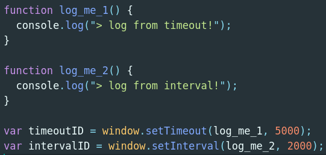

Timing Events
Poprzez obiekt window mamy dostęp do metod które umożliwiają egzekucję kodu w określonym przez nas czasie,
są to:
window.setTimeout(funkcja, milisekundy, args), która wykona określoną funkcję po upływie danej liczby milisekund.
oraz
window.setInterval(funkcja, milisekundy, args), która wykona określoną funkcję co określoną liczbę milisekund.
Przykłady użycia:

Obydwie metody zwracają ID, który pozwala nam zatrzymać timer. Do zatrzymywania timera używamy:
window.clearTimeout(timerID)
oraz
window.clearInterval(timerID)
Zadanie 1
Przygotuj prostą stronę wyświetlającą czerwony kwadrat 200px x 200px.
Dodaj do strony guzik którego aktywacja sprawi, że po dwóch sekundach kwadrat zmieni kolor.
Zadanie 2
Spraw by po wciśnięciu guzika kolor zmieniał się co sekundę, dodaj drugi guzik który sprawi,
że kolor już nie będzie się zmieniał.
Zadanie 2.1*
Dodaj ostateczne ulepszenie, którym będzie jakiś sposób regulowania częstotliwości zmiany koloru przez użytkownika,
można wykorzystać np. tag <input>.
Obiekt Date
Gdy mamy utworzony obiekt typu Date, wymienione poniżej metody pozwalają na pobranie lub ustawienie daty i godziny przedstawianej przez dany obiekt:
- getDate(), setDate() - zwraca lub ustawia dzień miesiąca
- getDay() - zwraca dzień tygodnia (od 0 do 6)
- getFullYear(), setFullYear() - zwraca lub ustawia rok (4 cyfry)
- getHours(), setHours() - zwraca lub ustawia godzinę (od 0 do 23)
- getMilliseconds(), setMilliseconds() - zwraca lub ustawia milisekundy (od 0 do 999)
- getMinutes(), setMinutes() - zwraca lub ustawia minuty (od 0 do 59)
- getMonths(), setMonths() - zwraca lub ustawia miesiąc (od 0 do 11)
- getSeconds(), setSeconds() - zwraca lub ustawia sekundy (od 0 do 59)
- getTime(), setTime() - liczba milisekund, które upłynęły od 1 stycznia 1970 roku, 00:00:00 UTC; dla daty sprzed podanego dnia wartość jest ujemna
- getTimezoneOffset() - zwraca wyrażone w minutach przesunięcie strefy czasowej dla bieżącej lokalizacji
- toDateString() - zwraca datę w postaci ciągu tekstowego
- toTimeString() - zwraca godzinę w postaci ciągu tekstowego
- toString() - zwraca ciąg tekstowy przedstawiający wskazaną datę
Zad 3
Uzupełnij luki (tzn. co wstawić w miejsce ‘???’) w poniższym skrypcie języka JavaScript tak, aby na stronie o poniższym kodzie źródłowym treść elementu o identyfikatorze paragraph-three została zastąpiona przez komunikat znadujący się pod skryptem JS?
Obiekt String
W przypadku wartości będącej ciągiem tekstowym można użyć własciwości i metody obiektu String:
- length - właściwość, która przechowuje liczbę znaków znajdujących się w ciągu tekstowym
- toUpperCase() - metoda, która zmienia małe znaki na duże
- toLowerCase() - metoda, która zmienia duże znaki na małe
- charAt() - metoda, która pobiera numer indeksu jako parametr, a następnie zwraca znak znajdujący się we wskazanym położeniu
- indexOf() - metoda, która zwraca numer indeksu pierwszego znaku lub zbioru znaków
- lastIndexOf() - metoda, która zwraca numer indeksu ostatniego znaku lub zbioru znaków
- substring() - metoda, która zwraca znaki znalezione między dwoma indeksami, przy czym znak znajdujący się w położeniu wskazywanym przez pierwszy indeks jest dołączony, natomiast znak wskazywany przez drugi indeks nie jest dołączony
- split() - metoda, która po podaniu znaku powoduje podział ciągu tekstowego w każdym miejscu wystąpienia danego znaku, a następnie poszczególne elementy przechowuje w tablicy
- trim() - metoda, która usuwa znaki odstępu na początku i końcu ciągu tekstowego
- replace() - metoda, która działa podobnie jak funkcja typu “znajdź i zamień”. Pobiera wartość do znalezienia oraz wartość zastępującą (domyślnie zastąpienie wartości następuje tylko dla pierwszego znalezionego dopasowania)
Zad 4
Mamy do dyspozycji zmienną var sentence = “ Home sweet home “;. Dla strony o kodzie źródłowym z zad 3 zastąp treść elementu o identyfikatorze paragraph-one następującą treścią:
Nasz ciąg ma długość: ... .
Jeśli zmienimy wszystkie znaki na wielkie ciąg będzie wyglądać tak: ... .
Na 10. pozycji znajduje się znak: ... .
Ciąg 'ee' znajduje się na miejscu: ... .
Ostatni indeks znaku 'e' to: ... .
Znaki od 8 do 14 to: ... .
Po usunięciu niepotrzebnych spacji nasz ciąg wygląda tak: ... .
Po zmianie 'me' na 'w' nasz ciąg wygląda tak: ... .
Sources:
https://www.w3schools.com/js/js_timing.asp
https://developer.mozilla.org/en-US/docs/Web/API/WindowOrWorkerGlobalScope/setInterval
https://developer.mozilla.org/en-US/docs/Web/API/WindowOrWorkerGlobalScope/setTimeout